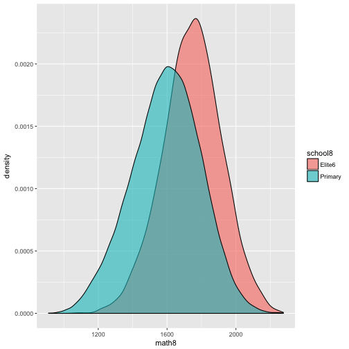
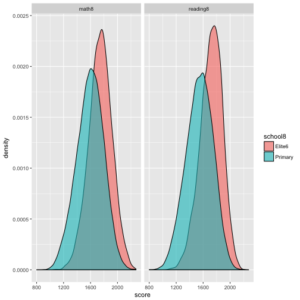

DA Homework 5 - SOLUTION
library(readr)
library(dplyr)
library(tidyr)
library(ggplot2)
library(stargazer)
## Error in library(stargazer): there is no package called 'stargazer'
source('~/teaching/BME_adat/201617/code/da_helper_functions.R')
Task 1
Download the sample-cohort.csv from the Data section. It contains sample data from the
National Assessment of Basic Competencies. All of you (who finished high school in Hungary)
had to fulfill this survey in your 6th, 8th and 10th grade. This sample is about
the cohort who started their 6th grade in 2010 (when I graduated from BME), without
the students in 8-class schools.
The sample contains 8 variables: the id, the type of the school in 8th grade (either primary school or 6-class school, called “Elite6”), the math and reading scores from both the 6th and 8th grade, and the education level of the student’s parents.
cohort <- read_csv('~/teaching/BME_adat/201617/data/sample_cohort_2010.csv')
## Parsed with column specification:
## cols(
## id = col_double(),
## school8 = col_character(),
## math8 = col_double(),
## reading8 = col_double(),
## math6 = col_double(),
## reading6 = col_double(),
## fed8 = col_character(),
## med8 = col_character()
## )
- How many students went to 6-class schools in the sample? What share?
cohort %>%
count(school8) %>%
mutate(share = n/sum(n))
## # A tibble: 2 x 3
## school8 n share
## <chr> <int> <dbl>
## 1 Elite6 5217 0.06029262
## 2 Primary 81311 0.93970738
Less than 10 percent of the sample cohort went to 6-class school. We call this type as elite school because of selectivity.
- Plot the distribution of math or reading scores in 8th grade by school types. Which school’s students perform better?
cohort %>%
ggplot(aes(x = math8)) +
geom_density(aes(fill = school8), alpha = 0.6)
## Warning: Removed 6591 rows containing non-finite values (stat_density).

# More complex plot
cohort %>%
select(school8, math8, reading8) %>%
gather(measure, score, -school8) %>%
ggplot(aes(x = score)) +
geom_density(aes(fill = school8), alpha = 0.6) +
facet_wrap(~ measure)
## Warning: Removed 13133 rows containing non-finite values (stat_density).

Students in 6-class schools perform considerably better, than primary school students. This again seems to promote the “Elite” naming.
- Run a regression of 8th grade math score on school types. Interpret the coefficients.
lm1 <- lm(math8 ~ school8, cohort)
summary_r(lm1)
## Loading required package: car
## Warning in library(package, lib.loc = lib.loc, character.only = TRUE,
## logical.return = TRUE, : there is no package called 'car'
## Error in calculate_robust_se(model): Required car package is missing.
Students in 6-class schools have on average score of 1745, 151.6 higher than primary schhol students. This difference is statistically significant.
- Do you think it shows that elite schools are better? How could you get closer to answer this question? Try to run regressions and interpret what you get.
lm2 <- lm(math8 ~ school8 + math6, cohort)
lm3 <- lm(math8 ~ school8 + math6 + reading8, cohort)
lm4 <- lm(math8 ~ school8 + math6 + reading8 + med8 + fed8, cohort)
stargazer_r(list(lm1, lm2, lm3, lm4), digits = 1)
## Loading required package: stargazer
## Warning in library(package, lib.loc = lib.loc, character.only = TRUE,
## logical.return = TRUE, : there is no package called 'stargazer'
## Error in stargazer_r(list(lm1, lm2, lm3, lm4), digits = 1): Required stargazer package is missing.
By gradually including new control variables, the “effect” of elite school decreases. When we compare the performance of two students who had the same math score in 6th grade (when both went to primary school), the one who is now a student of an elite school is expected to perform better only by 23 points. Also controlling for the 6th grade reading score, the difference changes sign: primary school student perform better on average than an elite school student with the same 6th grade scores. Controlling for parental education makes this difference even bigger.
We can conclude that it we get no evidence that elite schools are better. They mainly just select better students, that is what explains ther higher performance. As we try to compare similar students there is no difference in their performance, or if any, it is in favor for primary schools.